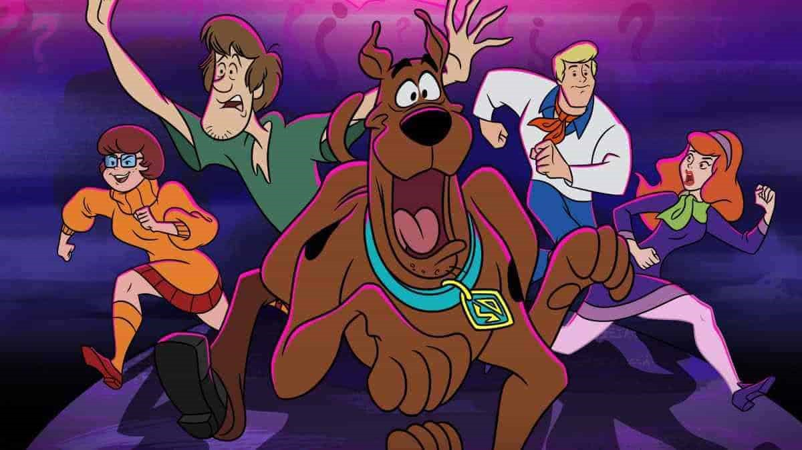
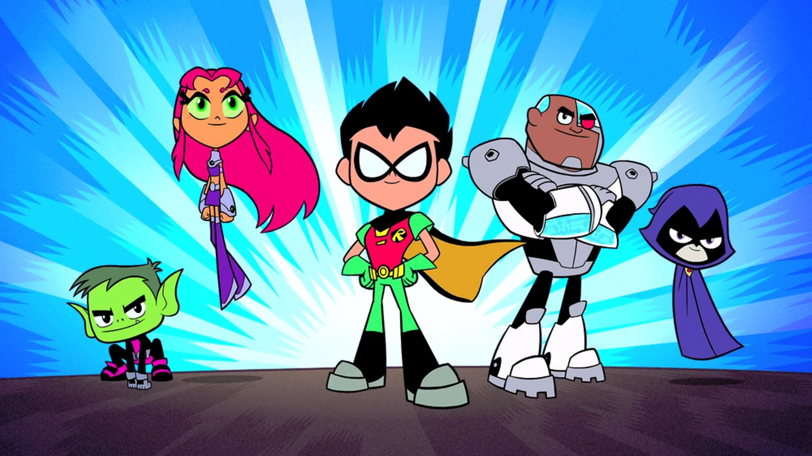
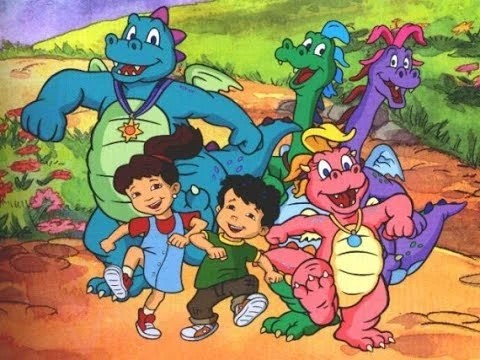
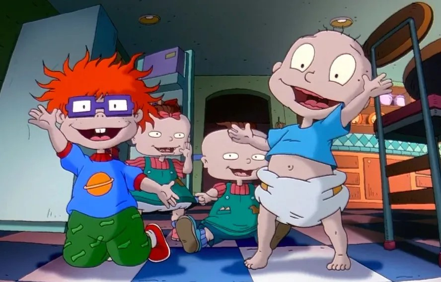
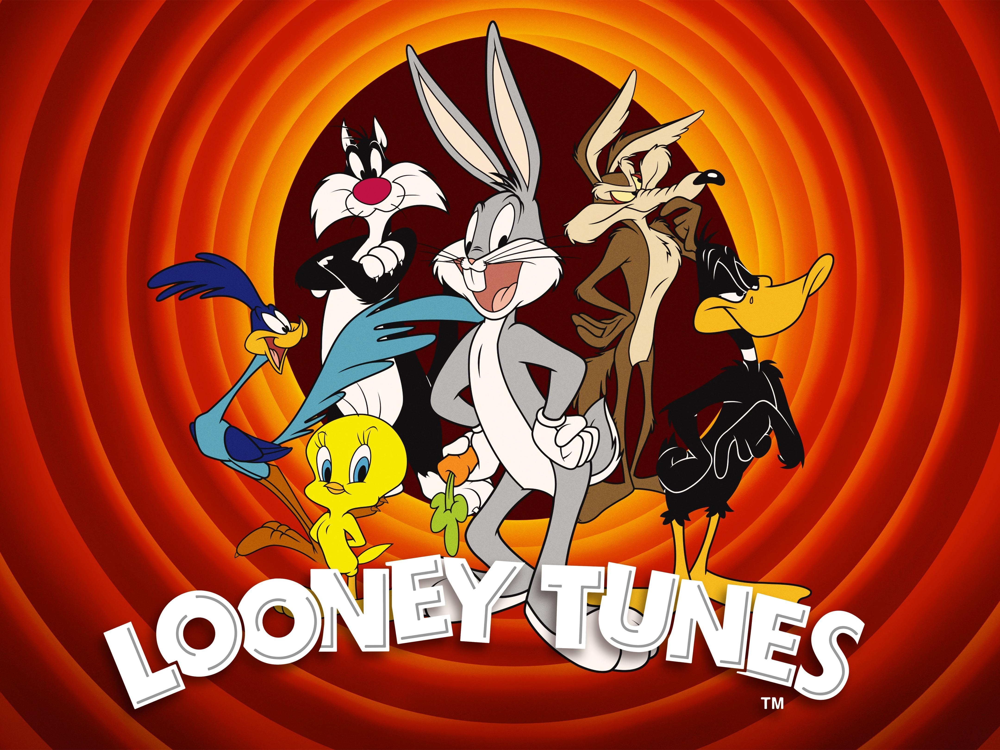

Uma série que segue os muitos mistérios da Mystery Gang, que consiste de Fred, Daphne, Velma, Salsicha e Scooby. Juntos, eles viajam ao redor do mundo, sempre em busca de um mistério a ser resolvido.
Robin, Estelar e outros super-heróis vivem juntos sem supervisão adulta e lidam com as questões diárias do universo jovem quando não estão salvando o mundo.
Emília e seu irmão Max, encontram uma pedra mágica e viajam para a Terra dos Dragões, onde vivem as mais incríveis aventuras.
Conheça as provações e os apuros de Doug, um menino de onze anos e meio que, quando não está brincando com seus amigos, gosta de escrever em seu diário e fantasiar que é um super-herói.

Um grupo de bebês mostra suas ideias sobre o mundo do seu próprio ponto de vista infantil. Tommy e seus amigos estão em constante batalha com a prima mais velha, Angelica, que gosta de atormentá-los.
A história de um menino de 11 anos chamado Pepe, que ajuda sua avó fazendo entregas de artefatos e poções mágicas pela internet.

Uma esponja-do-mar chamada Bob Esponja Calça Quadrada mora com seu caracol de estimação na Fenda do Biquíni, no fundo do oceano. Bob trabalha no Siri Cascudo e, nas horas vagas, vive arrumando confusões com seu melhor amigo, a estrela-do-mar Patrick.

O cotidiano de uma divertida família cujos sete irmãos estão sob os cuidados da mãe o tempo todo. Cada um deles tem diferentes feições monstruosas e divertidas personalidades. Eles enfrentam os desafios da infância e ajudam uns aos outros.

Divirta-se com as loucas aventuras de Pernalonga, Patolino, Frajola, Piu-piu, Lola e Taz ainda bebês morando na casa da Vovó e aprontando altas trapalhadas.

Looney Tunes é uma série de curta-metragens de animação americanos, produzida de 1930 a 1969 e distribuída pela Warner Bros.
